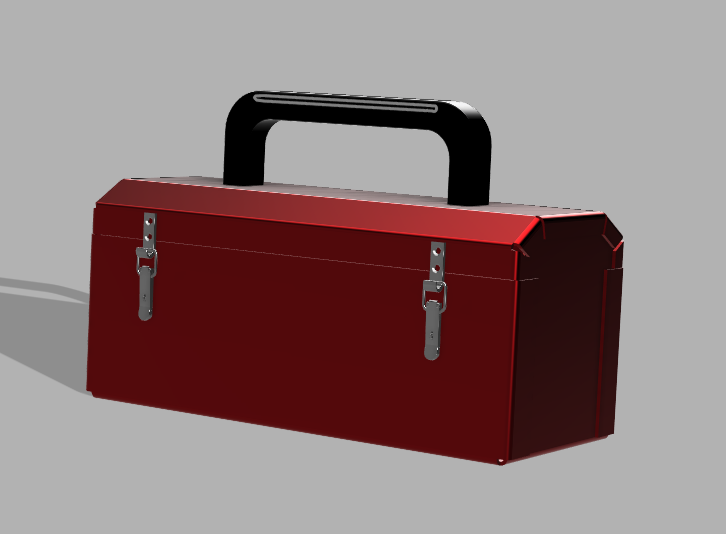
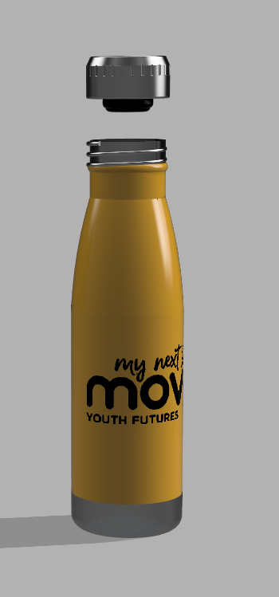

Welcome to the DT Hub
Your central entry point for projects in CAD modelling, website HTML coding and game development. Choose a pathway below to explore resources, examples and project briefs.
CAD Modelling
CAD modelling involves using computer-aided design (CAD) software to create accurate digital representations of physical objects, components, and structures. Students can use CAD software to design three-dimensional models, develop technical drawings, and test how designs fit together before manufacturing them. This process allows users to visualise their ideas, identify potential design problems, and make modifications efficiently. CAD modelling is particularly useful in engineering, product design, architecture, and manufacturing, where precision and functionality are important.
CAD project gallery



From idea to finished design
CAD projects often begin by identifying a need or problem. Designers then sketch ideas, build a digital model, test its dimensions and fit, and refine the design before making or presenting the final outcome.
- Research the user, purpose, and requirements.
- Sketch possible solutions and choose a design direction.
- Create and refine the 3D model or technical drawing.
- Test the design, make improvements, and present the final outcome.
Tools and skills
CAD work can use programs such as Fusion 360, Tinkercad, or other 3D modelling tools. Useful skills include measuring accurately, working with shapes and dimensions, reading technical drawings, and explaining why design decisions meet the needs of the user.
Ideas to include in a project write-up
- The problem your design is intended to solve.
- Who the design is for and what they need.
- Materials, software, and manufacturing methods considered.
- Changes made after testing or receiving feedback.